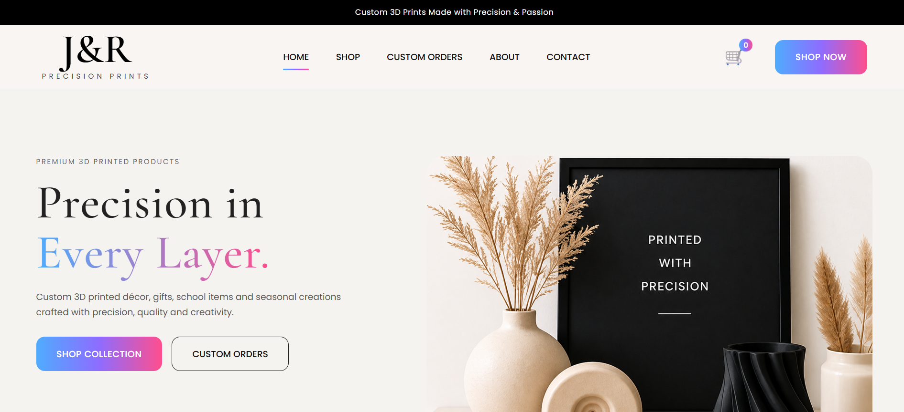

01
E-COMMERCE · WEB DEVELOPMENT · REAL-WORLD PROJECT
J&R Precision Prints
A production e-commerce website designed and developed for a real 3D printing business. I built the website from the ground up, implementing responsive layouts, dynamic product data, category filtering, shopping cart functionality and browser-based data persistence.
jrprecisionprints.co.za
